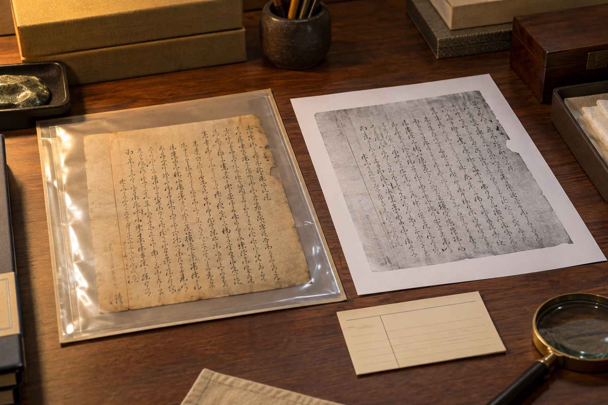

西安笔迹鉴定看原件还是复印件，先说明材料从哪里来
原件与复印件可观察的信息不同，咨询前先说明持有形式和复制次数。

先说持有形式，再谈图像清楚程度
西安笔迹鉴定咨询中，原件与复印件的区别不是“哪张更清楚”这么简单。原件保留实际纸张与墨迹，复印件呈现复制后的图像。可以先列出每页持有形式、是否还能找到原件以及复制次数是否已知，再由接收方判断后续材料要求。
复制件也要完整归档
模仿笔迹正文的复印件拍摄时保留纸边和页码，模仿签名与模仿签字区域另做局部，不把黑白图处理成看似彩色原件。目录中写明它是复制件，能看清哪些部分、哪些部分较淡，都比用软件反复加深后只留下一个版本更清楚。
提交前的一项核对
先说持有形式，再谈图像清楚程度，需要注意什么？
原件与复印件可观察的信息不同，咨询前先说明持有形式和复制次数。可先按这一点核对现有材料，再说明目前缺少的内容。